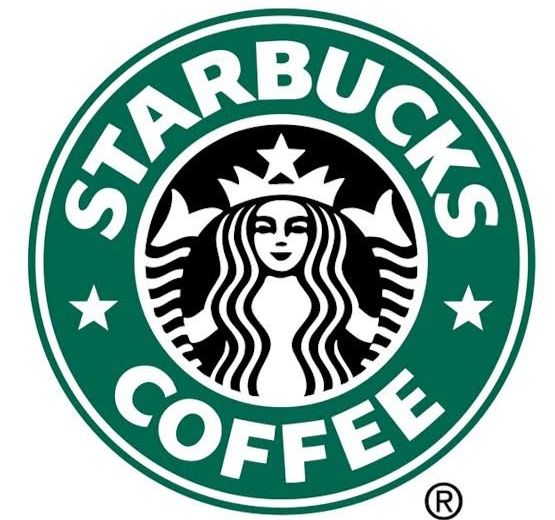
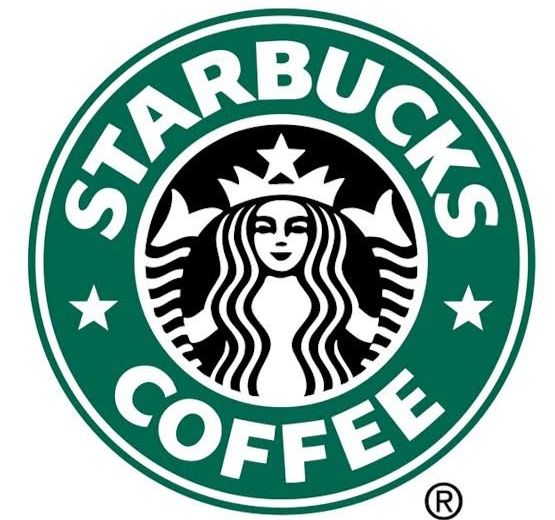

Time Management Importance The importance of time managementin our daily lives cannot be overstated. It is a crucial skill that allows us to achieve our goals, increase productivity, and reduce stress. Effective time management involves setting priorities, breaking down tasks into smaller, more manageable steps, and allocating the necessary time to complete each task. By doing so, we can make the most of our time, avoid procrastination, and ensure that we have enough time for both work and leisure activities. In today's fast-paced world, time is a precious commodity, and learning to manage it effectively is essential for success and well-being.


 
